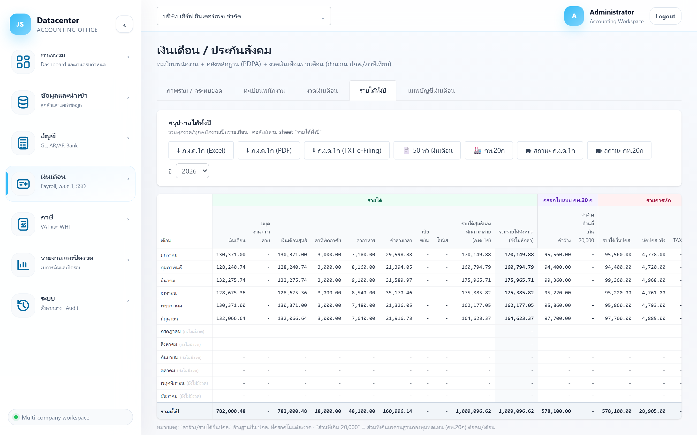

ภ.ง.ด.1 / ภ.ง.ด.1ก — ภาษีหัก ณ ที่จ่ายพนักงาน
แบบยื่นภาษีเงินได้หัก ณ ที่จ่ายของพนักงาน — ภ.ง.ด.1 รายเดือน จากงวดเงินเดือน และ ภ.ง.ด.1ก สรุปทั้งปี พร้อม หนังสือรับรอง 50 ทวิ เงินเดือน ให้พนักงาน
ภ.ง.ด.1 = ยื่น ทุกเดือน ภายในวันที่ 7 ของเดือนถัดไป · ภ.ง.ด.1ก = สรุป ทั้งปี ยื่นภายในเดือนกุมภาพันธ์ของปีถัดไป
เมนู เงินเดือน → ภ.ง.ด.1 เปิดหน้าเงินเดือนแล้วเด้งไปแท็บ รายได้ทั้งปี ให้เอง — ส่วนไฟล์ ภ.ง.ด.1 รายเดือนอยู่ในงวดเงินเดือนของเดือนนั้น (ดู เงินเดือน)
1. ภ.ง.ด.1 รายเดือน
- เปิดเมนู เงินเดือน → เงินเดือน แล้วไปแท็บ งวดเงินเดือน
- กด เปิด ที่งวดของเดือนที่จะยื่น
- กดปุ่ม ⬇ ภ.ง.ด.1 (TXT) ที่แถบด้านบนของงวด
- นำไฟล์ที่ได้ไปอัปโหลดยื่นที่เว็บกรมสรรพากร
ไฟล์สร้างจากตัวเลขในงวดนั้น — ถ้ายังมีช่องที่ระบบทำเครื่องหมายว่า “ต่างจากที่คำนวณ” ให้แก้ก่อน (อัปโหลด Template ใหม่ทับ) แล้วค่อยออกไฟล์
2. แท็บ “รายได้ทั้งปี” (ภ.ง.ด.1ก)

ตารางรวมทุกงวดทุกพนักงาน แสดงเป็นรายเดือน และแบ่งคอลัมน์เป็น 4 กลุ่มด้วยสี
| กลุ่มคอลัมน์ | ประกอบด้วย |
|---|---|
| รายได้ (เขียว) | เงินเดือน, หยุดงาน+มาสาย, เงินเดือนสุทธิ, ค่าที่พักอาศัย, ค่าอาหาร, ค่าล่วงเวลา, เบี้ยขยัน, โบนัส, รายได้สุทธิหลังหักลามาสาย (ภ.ง.ด.1ก) และรวมรายได้ทั้งหมด |
| กรอกในแบบ กท.20 ก (ม่วง) | ค่าจ้าง และค่าจ้างส่วนที่เกิน 20,000 — ใช้กรอกแบบกองทุนเงินทดแทน |
| รายการหัก (แดง) | รายได้ยื่น ปกส., หัก ปกส. จริง, ภาษี และรายการหักอื่น |
| รวม (เทา) | ยอดรวมของแต่ละเดือนและแถว รวมทั้งปี ด้านล่างสุด |
“ค่าจ้าง / รายได้ยื่น ปกส.” = อ้างฐานยื่นประกันสังคมที่กรอกในแต่ละงวด · “ส่วนที่เกิน 20,000” = ส่วนที่เกินเพดานฐานกองทุนเงินทดแทน (กท.20ก) ต่อคนต่อเดือน
3. ปุ่มออกแบบและเอกสาร
| ปุ่ม | ได้อะไร |
|---|---|
| ↓ ภ.ง.ด.1ก (Excel) | ไฟล์ Excel สำหรับตรวจทานและเก็บเป็นกระดาษทำการ |
| ↓ ภ.ง.ด.1ก (PDF) | แบบ ภ.ง.ด.1ก ที่กรอกค่าให้แล้ว สำหรับตรวจทาน/เก็บแฟ้ม |
| ↓ ภ.ง.ด.1ก (TXT e-Filing) | ไฟล์สำหรับอัปโหลดยื่นที่เว็บกรมสรรพากร (ชื่อไฟล์ใช้ ปี พ.ศ.) |
| 📄 50 ทวิ เงินเดือน | หนังสือรับรองหัก ณ ที่จ่ายของพนักงานทั้งปี — ออกให้พนักงานทุกคนตามกฎหมาย |
| กท.20ก | แบบแสดงเงินค่าจ้างประจำปี (กองทุนเงินทดแทน) — ดู ประกันสังคม |
| สถานะ ภ.ง.ด.1ก | บันทึกว่ายื่นแล้วหรือยัง (ดูข้อ 4) |
| สถานะ กท.20ก | บันทึกสถานะการยื่น กท.20ก |
ช่องเลือกปีบนหน้าจอเป็น ค.ศ. แต่ไฟล์ TXT ที่ยื่นสรรพากรใช้ พ.ศ. ในชื่อไฟล์ — เป็นปีเดียวกัน ตรวจให้ตรงก่อนอัปโหลด
4. บันทึกสถานะการยื่น
กด สถานะ ภ.ง.ด.1ก เพื่อบันทึกหลักฐานการยื่น
| ช่อง | คำอธิบาย |
|---|---|
| จำนวนคน | จำนวนพนักงานที่ยื่นในแบบนั้น |
| แบบที่ยื่น | แนบไฟล์แบบที่ยื่นจริง — เมื่อแนบแล้วจะขึ้น มีไฟล์ (ดาวน์โหลด) |
| ใบเสร็จ | แนบใบเสร็จ/หลักฐานการรับแบบจากกรมสรรพากร |
สถานะนี้ไปแสดงบนแท็บ ภาพรวม / กระทบยอด และใช้ยืนยันตอนตรวจสอบย้อนหลังว่ายื่นครบทุกงวดจริง — และเป็นหลักฐานที่ผู้สอบบัญชีขอดู
5. หนังสือรับรอง 50 ทวิ เงินเดือน
กด 📄 50 ทวิ เงินเดือน ระบบสร้างหนังสือรับรองหัก ณ ที่จ่ายของพนักงานทั้งปีให้
ใบนี้ออกให้ พนักงาน จากรายได้เงินเดือน — ส่วน 50 ทวิ ของคู่ค้า/ผู้รับจ้าง อยู่ที่เมนู หัก ณ ที่จ่าย คนละที่กัน
6. ตรวจก่อนยื่น ภ.ง.ด.1ก
- งวดครบ 12 เดือนหรือยัง — ดูการ์ด “เดือนที่บันทึกแล้ว” ที่แท็บภาพรวม
- กล่องกระทบยอด ③ ภาษี ↔ ภ.ง.ด.1ก เป็นสีเขียว — แปลว่าผลรวมภาษีรายเดือนตรงกับแบบสรุปปี
- ออกไฟล์ Excel/PDF ตรวจทาน ก่อนออก TXT
- ยื่นที่เว็บสรรพากร แล้วกลับมา บันทึกสถานะ + แนบใบเสร็จ
- ออก 50 ทวิ ให้พนักงานทุกคน
7. ปัญหาที่พบบ่อย
| อาการ | สาเหตุและวิธีแก้ |
|---|---|
| กล่องกระทบยอด ③ ไม่เขียว | ผลรวมภาษีรายเดือนไม่ตรงกับ ภ.ง.ด.1ก — ตรวจว่ามีงวดไหนตกหล่นหรือกรอกภาษีผิด |
| ตารางรายได้ทั้งปีว่างหรือไม่ครบ | ยังสร้างงวดไม่ครบทุกเดือน — เดือนที่ยังไม่มีจะขึ้น “(ยังไม่มีงวด)” |
| ปุ่ม ภ.ง.ด.1 (TXT) หาไม่เจอ | อยู่ในงวดเงินเดือน ไม่ใช่แท็บรายได้ทั้งปี — เปิดงวดของเดือนนั้นก่อน |
| ยอดใน กท.20ก ไม่ตรงกับที่คิดเอง | กท.20ก ใช้ค่าจ้างที่หักส่วนเกินเพดาน 20,000 ต่อคนต่อเดือนแล้ว — ดูคอลัมน์กลุ่มสีม่วงประกอบ |
| 50 ทวิ ยอดไม่ตรงกับที่พนักงานคำนวณเอง | ใบนี้ใช้ยอดตามงวดที่บันทึกในระบบ — ถ้าต่างแปลว่างวดในระบบยังไม่ตรงกับ slip จริง |
งานนำส่งประกันสังคมของเดือนเดียวกัน — ประกันสังคม →